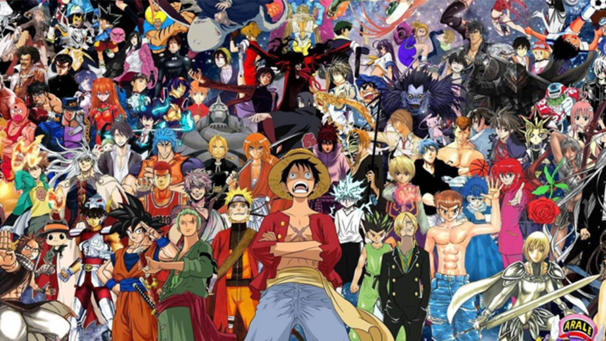

En effet, la musique est une des passions que j'ai depuis très longtemps. D'ailleurs après avoir découvert les animés, j'ai radicalement changé de goût dans le domaine de la musique et j'ai commencé à écouter des musiques d'animés (des openings ou des endings).
Les jeux vidéos
De plus, j'adore les jeux vidéos et ce depuis que je suis tout petit. J'ai joué à pleins de jeux différents et j'ai même joué pendant 10 heures d'affilées une fois. Mon jeu préféré est battlefield et si cela vous intéresse voici un gameplay.
Les animés
J'adore également les animés et ce depuis 4 ou 5 ans lorsque j'ai rencontré mon meilleur ami qui m'a introduit aux animés et aux mangas. Ils m'ont permis d'avancer dans la vie et de ne pas rester dans la dépression.D'ailleurs, voici un exemple d'opening d'animé que j'adore depuis quelques jours.
